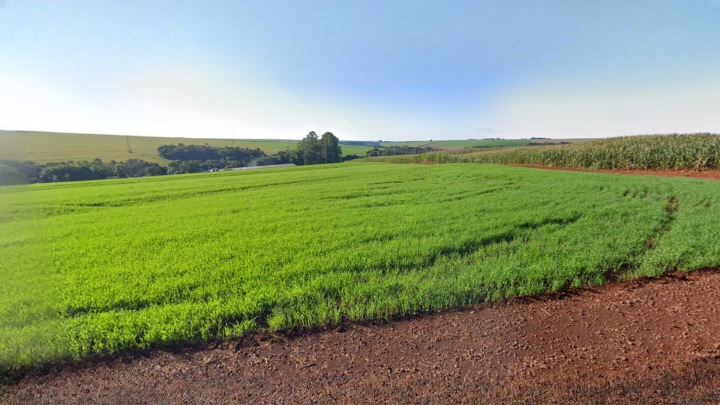
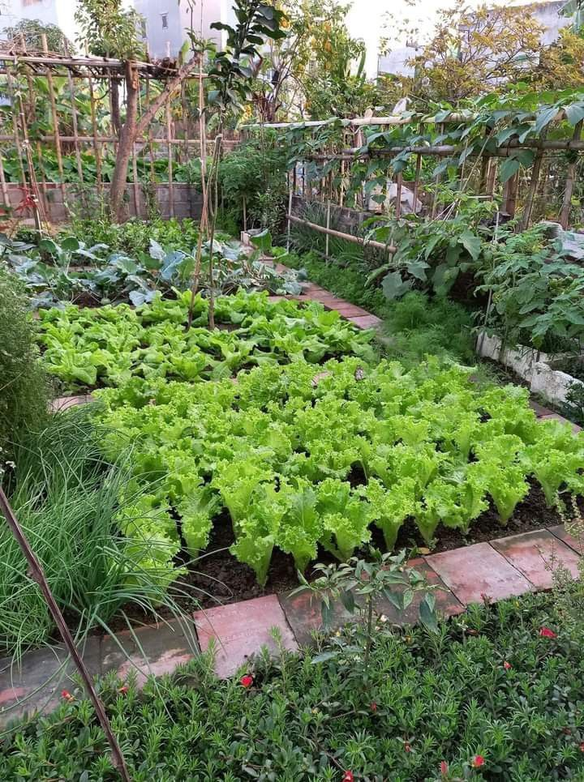

Proteina Animal
Frangos e Peixes de alta performance em parceria com a Copacol.

Grãos
Tecnologia e produtividade no cultivo de milho e soja.

Essência
O cuidado da nossa horta de subsistência é refletido em todo o Sítio.
Do coração do Paraná para as mesas internacionais. Excelência na produção integrada e respeito à terra
Frangos e Peixes de alta performance em parceria com a Copacol.

Tecnologia e produtividade no cultivo de milho e soja.

O cuidado da nossa horta de subsistência é refletido em todo o Sítio.